AI/ML In Public Health
Kelsey Florek, PhD, MPH
Senior Genomics and Data Scientist
Wisconsin State Laboratory of Hygiene
www.k-florek.net/talks
Objectives
- Explore AI, ML, and LLMs
- Identify examples of AI/ML used in research and public health
- Describe the issues and challenges with Generative AI
- Evaluate the application of Generative AI in bioinformatics
- How have you used AI/ML/Generative AI?
- What concerns do you have about the usage of generative AI, in general or in public health?
What is AI?
Artificial Intelligence
Software that allows machines or computer systems to perceive their environment and use learning and intelligence to achieve a defined goal.
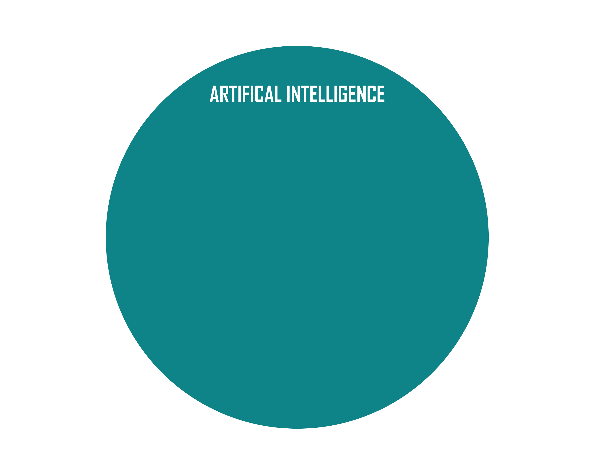
Machine Learning
An area in artificial intelligence with a focus on statistical algorithms that can learn from data and generalize to unseen data.
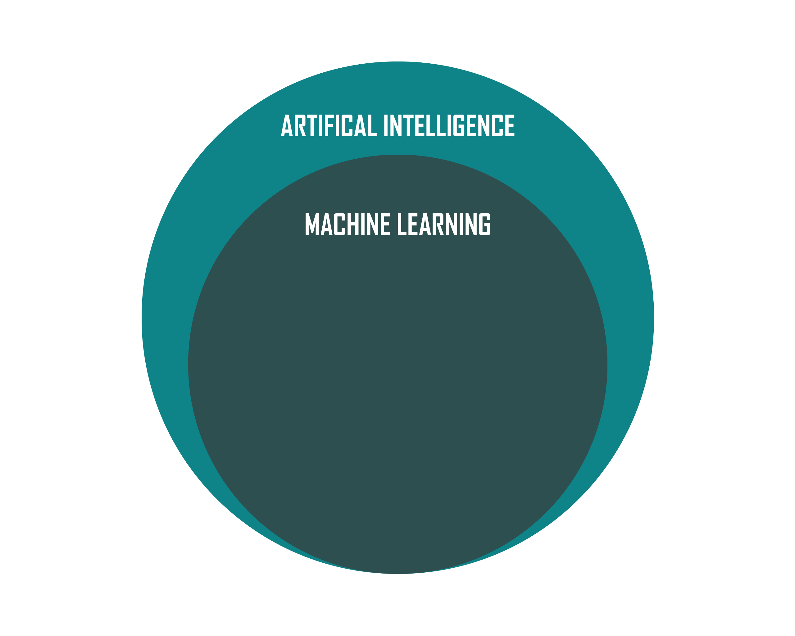
Deep Learning
A subset of machine learning methods that are based on neural networks, with deep implying multiple layers.
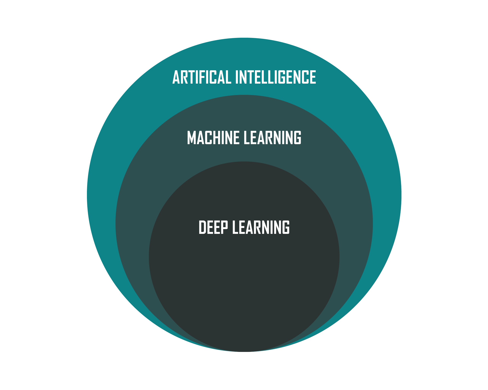
Generative AI
- a subset of AI and a type of deep learning model
- designed to create new and "original" content
- trained on massive datasets of existing content
Primer - AI/ML models and approaches
Model training paradigms
- Supervised Learning
- Unsupervised Learning
- Reinforcement Learning
- Online Learning
- Batch Learning
- Meta-learning
- Semi-supervised Learning
- Self-supervised Learning
- Curriculum Learning
- Rule-based Learning
- Quantum Machine Learning
Supervised Learning
A supervised machine learning approach requires labelled input and output data, allowing human oversight of the model's classification.
- Regression (prediction of a continuous variable):
- Linear Regression
- Polynomial Regression
- Classification (prediction of a categorical variable):
- Decision Trees
- Random Forest
- Logistic Regression
- K-Nearest Neighbors
Unsupervised Learning
An approach that can be used to group data when no labels are present. Typically applied to cases where the model is representative of the data to ask
- Clustering:
- K-Means
- DBSCAN
- Hierarchical Clustering
- Dimensionality Reduction:
- Principal Component Analysis (PCA)
- Singular Value Decomposition (SVD)
Neural Networks
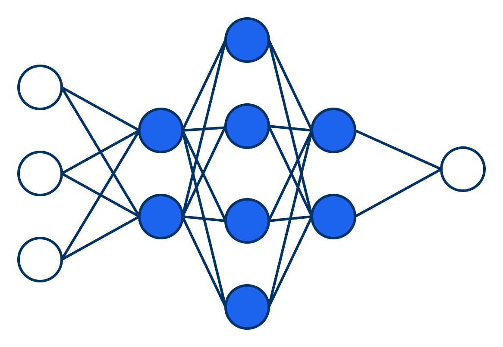
A computational model inspired by biological neural networks, inspired by the behavior of neurons.
Can be supervised, semi-supervised, self-supervised, unsupervised.
Natural Language Processing (NLP) and Deep Learning
Deep learning using neural networks has become the dominate method of NLP, using massive volumes of text and voice to an unprecedented level of accuracy.
Transformers: Combining the position of words and subwords (tokenization) along with dependencies and relationships between words (self-attention) allows for calculating different parts of language together.
A question of experience - How much training do models need?
- Type of problem - supervised vs unsupervised; image recognition or NLP
- Model Complexity - more layers or nodes = more training data needed
- Data Quality and Accuracy - noisy data will require more training data
Enhancing Accuracy and capabilities of Gen AI
Retrieval-augmented generation (RAG) - enhances accuracy and reliability of generative AI models by linking AI services to external resources.
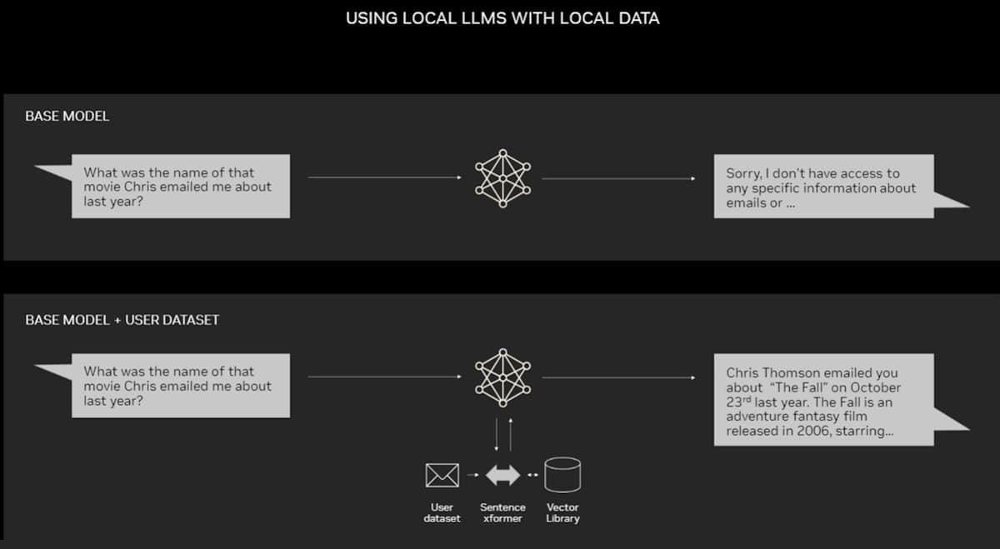
Enhancing Accuracy and capabilities of Gen AI
Tool Calling - enables LLMs to retrieve live data from APIs, databases, or even custom scripts, improving the accuracy and relevancies of responses.
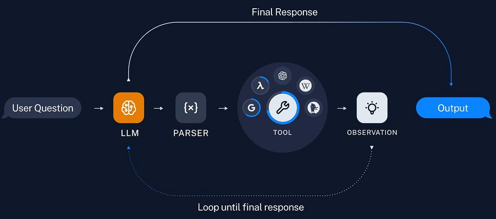
Enhancing Accuracy and capabilities of Gen AI
Multi-Agent - user query is processed by multiple agents, each playing a different "role".
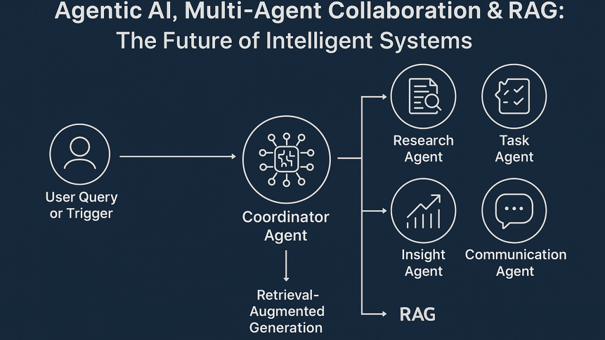
AI/ML applications in Public Health
Applying AI in public health
- Disease Forecasting
- Risk Prediction
- Health Diagnosis
- Spatial Modeling
- Surveillance
- Modeling
Prediction of echinocandin resistance in Candida auris
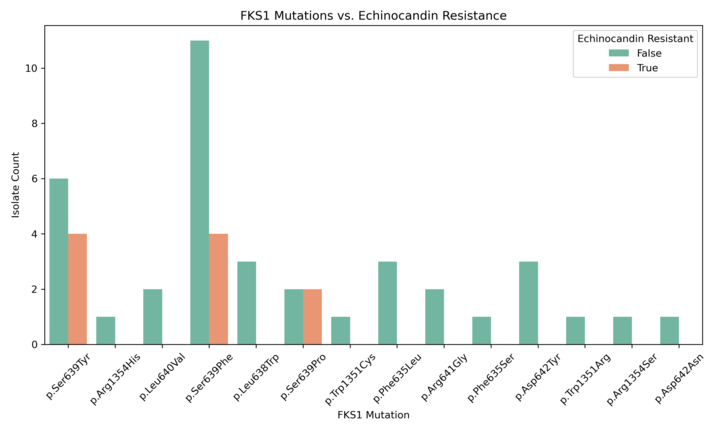
- 2,853 Candida auris isolates (AST breakpoints and FKS1 mutation data)
- Models Tested: Gradient Boosting, Random Forest, SVM, and XGBoost
- 80/20 train-test split
- Gradient Boosting frequently provided the best balance between performance metrics
- Ser639Phe are highly associated with resistance, demonstrating the potential of machine learning for genomic resistance prediction
Enhanced Detection System for Healthcare-Associated Transmission (EDS-HAT)
Combination of WGS surveillance and ML of electronic health records to identify outbreaks and transmission routes.
"EDS-HAT could have prevented 25 (lower bound) to 63 (upper bound) transmissions. Moreover, 3.1–8.0 fewer 30-day attributable readmissions and 1.6-3.3 fewer deaths would have occurred had EDS-HAT been running in real time."
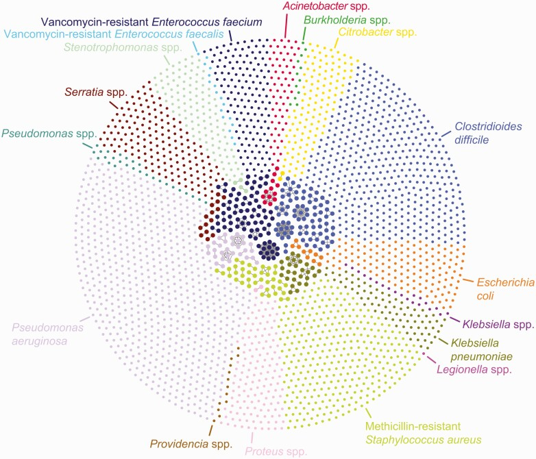
Generative AI in healthcare
- cross-sectional study of 195 randomly drawn patient questions from Reddit’s r/AskDocs
- compared physician’s and chatbot’s responses to patient’s questions asked publicly on Reddit’s r/AskDocs
- chatbot responses were preferred over physician responses and rated significantly higher for both quality and empathy
- NYUTron - an LLM trained on clinical language and fine-tuned across a wide range of clinical and operational predictive tasks
- 30-day all-cause readmission prediction
- in-hospital mortality prediction
- comorbidity index prediction
- length of stay prediction
- insurance denial prediction
Generative AI to support NCBI Uploads
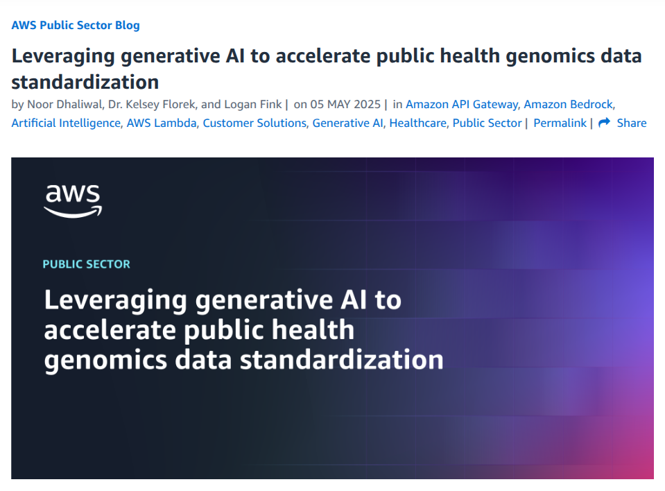
Challenges of Generative AI
Reaching the limit - AI hallucinations
AI hallucination - a phenomenon where a large language model perceives a pattern that is nonexistent to human observers resulting in outputs that are nonsensical or inaccurate.
- LLM Hallucinations
- False Facts - confidently state incorrect information
- Imaginary Scenarios - entirely fabricated stories or events
- Nonsense/Incoherence - output that doesn't follow any logical flow or grammatical rules
Ethical Considerations
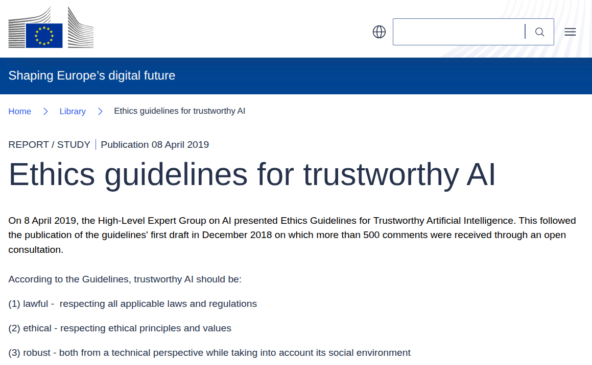
- AI systems should be under human oversight.
- They need a fallback plan if something is wrong and they must be accurate, reliable, and reproducible.
- They must ensure full respect for privacy and data protection.
- Transparent and offer traceability.
- AI systems must avoid unfair bias.
- Must benefit all human beings.
- Must ensure responsibility and accountability.
Energy Usage
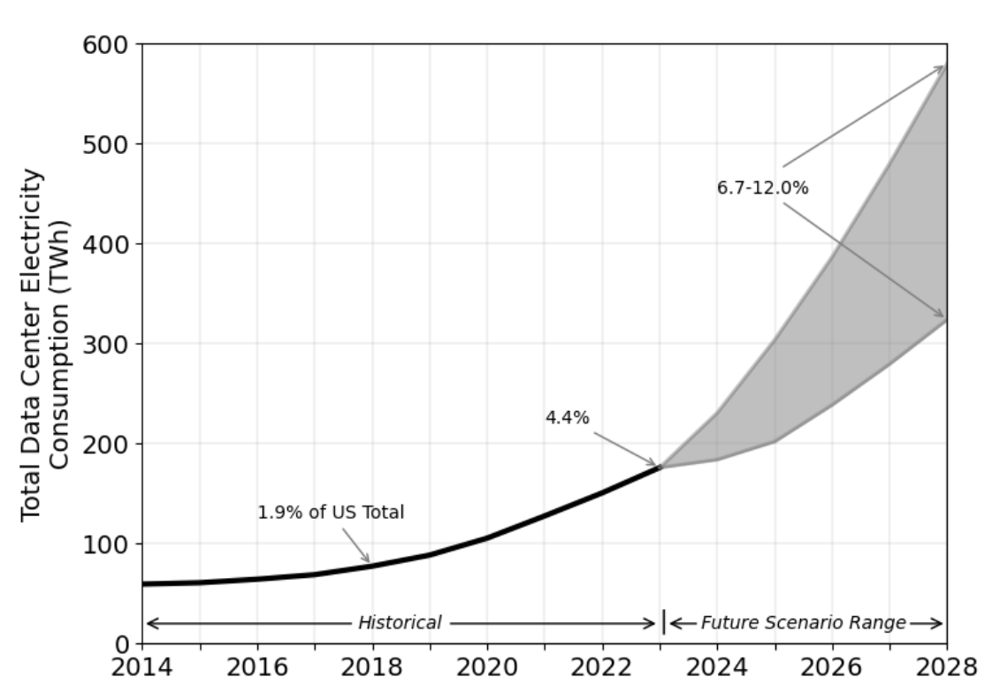
"In 2024, Electric Power Research Institute (EPRI) estimated that AI consumed 10% to 20% of data center energy."
Carbon Emissions
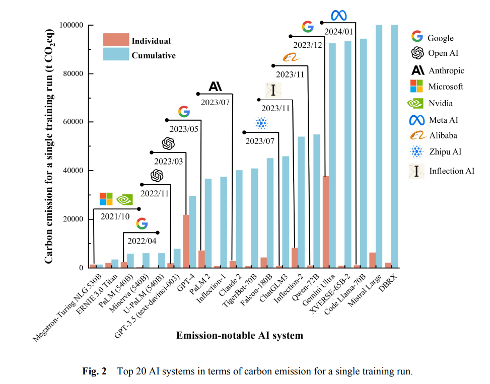
Water Usage
- AWS Datacenters used "about 2.5 billion gallons” globally in 2025
- 531 billion gallons a year used just for US golf courses
- 1.3 trillion gallons a year used in California almond orchards
- 3.3 trillion gallons used annually on US lawns and landscaping
- 34 trillion gallons of water annually is used on Corn
cognitive offloading - using tools, systems, resources to reduce the mental load in performing a task allowing you to redirect that effort somewhere else
- can lead to "an erosion of introspection, over-reliance on algorithmic feedback, and anxiety induced by hyper-monitoring and optimization"
- over-reliance can lead to an erosion of critical thinking and skills, also called cognitive surrender
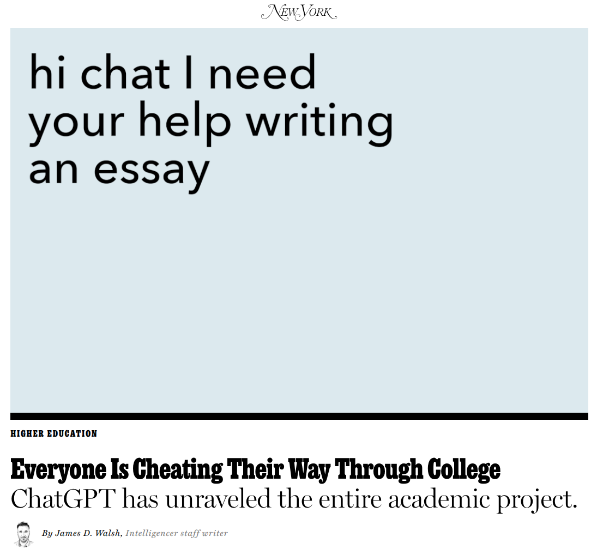
"When I asked her how she did on the assignment, she said she got a good grade. “I really like writing,” she said, sounding strangely nostalgic for her high-school English class — the last time she wrote an essay unassisted. “Honestly,” she continued, “I think there is beauty in trying to plan your essay. You learn a lot. You have to think, Oh, what can I write in this paragraph? Or What should my thesis be?” But she’d rather get good grades."
AI taking the joy from it all
"It feels like something valuable is being taken away, and suddenly. It took a lot of effort to get good at coding and to learn how to write code that works, to read and understand complex code, and to debug and fix when code doesn't work as it should. I still remember how daunting my first “real” programming class was at university (learning C), how lost I felt on my first job with a complex codebase, and how it took years of practice, learning from other devs, books, and blogs, to get better at the craft. Once you're pretty good, you have something that's valuable and easy to validate by writing code that works!"
AI Brain Fry
"the experience of overseeing multiple AI "agents" ... caused an acute sensation of “buzzing” — a fog that left workers exhausted and struggling to concentrate"
Applying Generative AI to Bioinformatics
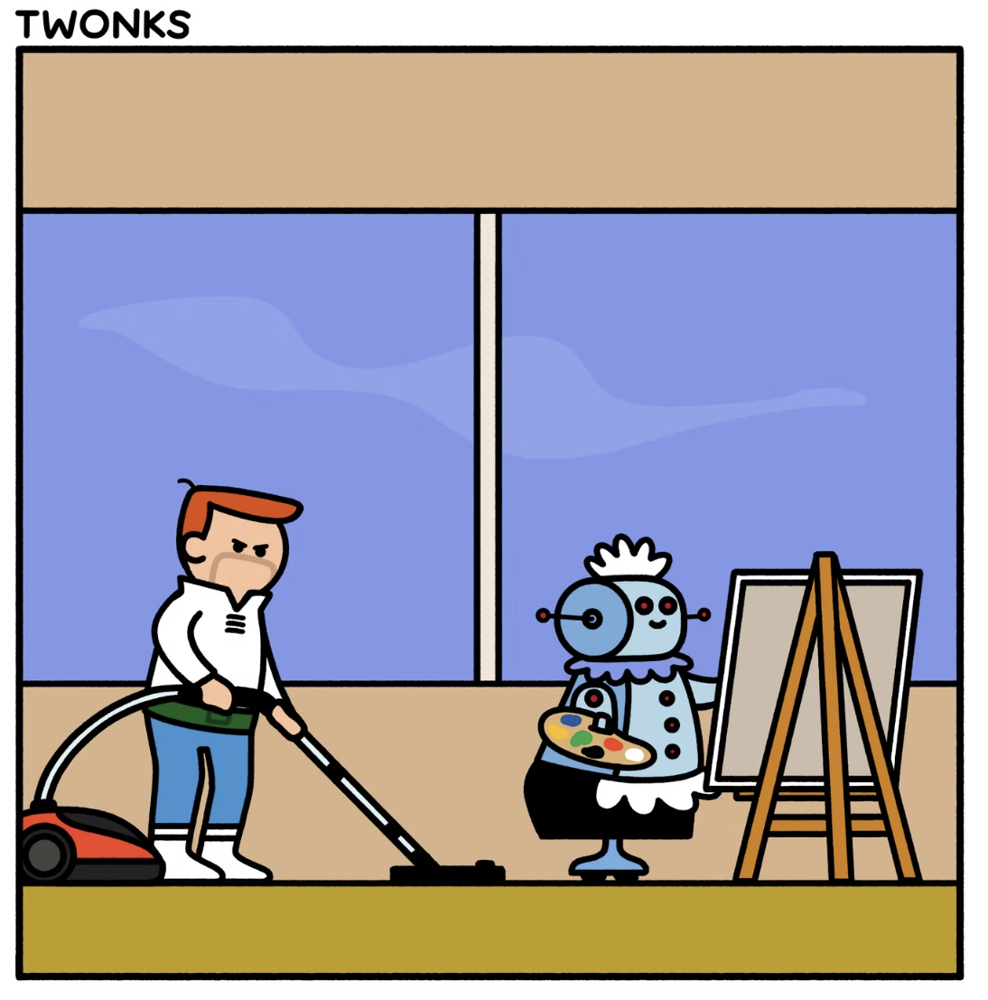